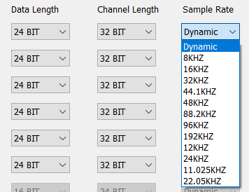

Audio Route User Manual
V1.1
2024/01/22
Revision History
| Version | Date | Description |
| V1.0 | 2023/05/30 | Initial version |
| V1.1 | 2024/01/22 | Fix some display errors |
Contents
Table List
Figure List
Glossary
| Terms | Definitions |
| MCLK | Master Clock |
| BCLK | Bit clock |
| IO | Input Output |
| SPK | Speaker |
| AMP | Amplifier |
| ADC | Analog Digital Channel |
| DAC | Digital Analog Channel |
| AEC | Acoustic Echo Cancelation |
| APT | Ambient Pass-through |
| LLAPT | Low Lantency Ambient Pass-through |
| ANC | Active Noise Cancellation |
| VAD | Voice Activity Detection |
1 Introduction
The purpose of this document is to describe how to use the audio route module in the MCUConfig TOOl. The audio route capability of each IC can be demonstrated using the MCUConfig Tool. The customers can configure the routing relationship of each audio stream by using MCUConfig Tool. This document contains the following information:
- Definition of audio route.
- Functions of audio route.
2 Audio Route Definition
Audio Route indicates the static configuration of the physical data path. The audio route module consists of Gateway configuration, Endpoint configuration and Logical IO configuration. The audio route module is classified according to the Audio Category.
Figure 2-1 shows a simplified audio route path between Codec and DSP.
Figure 2-1 Audio Route
As shown in Figure 2-1, the data collected by the primary mic passes through an adc channel of Codec and flows to a SPORT RX channel to reach DSP. After the data is processed by DSP, it passes through a SPORT TX channel and then passes through the DAC channel of Codec, and at last plays it out through the specific speaker.
The main function of the audio route module is to configure Gateway and Logical IO related parameters for an audio route path. Gateway controls the inflow and outflow of multiple stream routing paths. These stream routing paths shall have the same configurations which are sample rate, data length, channel length and channel mode. Logical IO defines the functional attributes of the stream routing path. The Controller is isolated from the Physical Peripheral, and needs Logical IO to obtain the stream routing context.
2.1 Audio Category Definition
Audio Category is used to classify all streams transferred between the Host and the Controller. The streams that have the same control flows, usage scenarios, and functionalities shall be classified as follows:
Figure 2-2 shows the types of Audio Category.
Figure 2-2 Audio Category
2.2 Endpoint Definition
Endpoint consists of SPK, MIC, AUX and SPDIF physical entity input and output.
Figure 2-3 shows types of Endpoint.
Figure 2-3 Endpoint Type
2.3 Logical IO Definition
Logical IO refers to the logical input and output related to the functions provided by the DSP. Logical IO consists of Primary Out, Secondary Out, Primary In, Secondary In, Fusion In, Bone In, External In, Internal In, Primary Aux, Secondary Aux, Primary SPDIF, Primary Ref In, Secondary Ref In, Primary Ref Out, Secondary Ref Out.
Figure 2-4 shows types of Logical_IO.
Figure 2-4 Logical_IO Type
2.4 Audio Route Path Definition
An audio path is constructed from one or more audio route paths.
Figure 2-5 shows the components of an audio route path.
Figure 2-5 Audio Route Path
As shown in Figure 2-5, an audio route path consists of Logical IO type, Endpoint type, SPK and MIC parameters, Gateway index and SPORT channel. The parameter of SPK contains SPK type, SPK gain and DAC channel. The parameter of MIC contains MIC index, MIC type, MIC gain and ADC channel. Endpoint type and Logical IO type are shown in Figure 2-3 and Figure 2-4 respectively.
Table 2-1 shows the parameter description of audio route path.
Table 2-1 Audio Route Path List
| Parameter Name | Parameter List |
| SPK ID | Speaker1/2. |
| SPK Type | Single-End/Differential. |
| DAC Channel | DAC0/1/2/3. |
| MIC ID | AMIC1/2/3, DMIC1/2. |
| MIC Type | Single-End/Differential/Falling Edge/Rising Edge. |
| ADC Channel | ADC0/1/2/3. |
| Gateway ID | SPORT0/1/2/3, SPDIF0. |
| Gateway Channel | TX Channel0/1/2/3, RX Channel0/1/2/3. |
3 Audio Route Functions
The audio route module is mainly used to configure related parameters of Gateway and Logical IO parameters of physical data stream.
The main configurable functions are as follows:
- Configure ADC Gain for the device MIC.
- Configure the Gateway hardware parameters.
- Configure the Codec Mixing function.
- Configure Logical IO parameters for the audio stream.
3.1 Configure ADC Gain
ADC Gain is mainly used to configure the analog boost gain of the selected physical MIC or AUX.
Figure 3-1 shows that Voice Primary In select AMIC1.
Figure 3-1 Voice Primary In AMIC1
Figure 3-2 shows how to configure ADC Gain.
Figure 3-2 ADC GAIN
For example, if the Voice Primary In is configured in the voice category and AMIC1 is selected as shown in the Figure 3-1, then the ADC Gain value of AMIC1 is required to be configured as shown in the Figure 3-2.
After clicking the Set ADC Gain button, the ADC Gain configuration box appears. Then you can select Analog Boost Gain through the drop-down box of AMIC1. The analog boost gain of the physical MIC or AUX can be set to 0, 3, 6, 9, 12, 18, 24, or 30dB.
Notes:
- MIC ADC Gain can be adjusted using the Set ADC Gain button only if AMIC is selected.
- You can adjust AUX ADC Gain by setting the Set ADC Gain button only when AUX is selected.
- DMIC Gain cannot be adjusted by the Set ADC Gain button.
- Configure ADC Gain for the AMIC index as required.
3.2 Configure Gateway
In the current Gateway parameters, the SPORT and SPDIF hardware parameters are configured by default. If there is no special requirement, you do not need to set them. If customers need to configure SPORT and SPDIF parameters, ask related developer to configure the parameters and provide them to customers. The default configuration for SPORT and SPDIF varies with different IC.
Figure 3-3 shows how to configure Gateway parameters.
Figure 3-3 Gateway
Configuration parameter description:
- SPORT 0/1/2/3: Select this option to enable the SPORT of the corresponding index.
- SPDIF0: Select this option to enable the SPDIF of the corresponding index.
- Bridge: SPORT supports single-direction TX and RX configurations. The value can be internal or external. It is worth noting that when this option is configured as external, you need to go to the HW Feature tab to configure the corresponding pinmux.
- Role: Configure the SPORT role. The value can be maste or slave.
- BCLK SRC: Configure the SPORT bclk and jitter functions. The optional value is XTAL/PLL.
- RX/TX FIFO Mode: Configure the manner in which the RX and TX directions of SPORT align FIFO data. The optional value is Non-interlaced/Interlaced.
- RX/TX Channel Mode: Configure the transfer mode in the RX and TX directions. The value is TDM2/4/6/8.
- RX/TX Format: Configure the format of SPORT data in the RX and TX directions. The value can be I2S/Left Justified/PCM_A/PCM_B.
- RX/TX Data Length: Configure the data length in the RX and TX directions of SPORT. The value is 8/16/20/24/32 bit.
- RX/TX Channel Length: Configure the length of the channel in the RX and TX directions. The optional value is 16/20/24/32 bit.
- RX/TX Sample Rate: Configure the RX and TX direction of SPORT support sampling rate conversion, optional value of 8/16/32/44.1/48/88.2/96/192/12/24/11.025/22.05KHZ.
3.2.1 Configure external device
Figure 3-4 shows how to configure external bridge.
Figure 3-4 External Bridge
If you need to configure an external device, you need to use the TX and RX drop-down boxes in the SPORT Bridge field to configure the external device in one direction. For example, if RX and TX in the Bridge of SPORT0 are configured as External, you need to configure the corresponding pinmux of SPORT0_LRC, SPORT0_BCLK, SPORT0_DACDAT, SPORT0_ADCDAT in the HW Feature tab.
Notes:
- When the Role field is set to Master, the Bridge field RX/TX allows users to freely select External/Internal.
When Role is set to "Slave", the RX/TX of the Bridge field can only be changed to the fixed value "External".
- RTL87X3G: For SPORT0/SPORT1, You can configure the Bridge field based on the Role field.
- RTL87X3E: For SPORT0/SPORT1, You can configure the Bridge field based on the Role field. For SPORT2, the Rx/Tx of its Bridge field is a fixed value "External ", regardless of its Role.
- RTL87X3D: For SPORT0/SPORT1/SPORT2, You can configure the Bridge field based on the Role field. For SPORT3, the Rx/Tx of its Bridge field is the fixed value "External", regardless of its Role value.
3.2.2 Configure MCLK
Figure 3-5 shows how to configure MCLK.
Figure 3-5 MCLK
MCLK is mainly used to configure the mclk sample rate of the external dsp. After RX and TX in the Bridge in SPORTs are configured as External, Frequency configuration takes effect only after MCLK Enable is selected.
Notes:
- MCLK Enable: If this option is selected, external mclk configuration is enabled.
- MCLK Rate: With the MCLK Enable option checked, the optional mclk rate is 1024KHZ, 1411.2KHZ, 2048KHZ, 2822.4KHZ, 3072KHZ, 4096KHZ, 5644.8KHZ, 6144KHZ, 8192KHZ, 11289.6KHZ, 12288KHZ, 16384KHZ, 22579.2K HZ, 24576KHZ, 32768KHZ.
3.2.3 Configure BCLK
Figure 3-6 shows how to configure BCLK.
Figure 3-6 BCLK
If there is no special requirement, the XTAL crystal oscillator is used as the clock source by default. You can also select PLL as the clock source by using the BCLK SRC drop-down box.
3.2.4 Configure SPORT Mode
SPORT Mode is configured by default. If you need to configure the Mode fields of TX and RX in SPORTs, the optional value is TDM2/4/6/8.
RTL87X3C&RTL87X3E&RTL87X3G: RX default TDM4,TX default TDM2.
RTL87X3D: RX default TDM6,TX default TDM2.
3.2.5 Configure SPORT Data Length
Figure 3-7 shows how to configure SPORT Data Length.
Figure 3-7 Data Length
SPORT Data Length is configured by default. The Data Length fields of TX and RX in SPORTs need to be configured when there is a special requirement.
For RTL87X3C, RTL87X3E, RTL87X3G and RTL87X3D: Set the Data Length to 24BIT.
3.2.6 Configure SPORT Channel Length
Figure 3-7 shows how to configure SPORT Channel Length. SPORT Channel Length is configured by default. The Channel Length fields of TX and RX in SPORTs need to be configured when there is a special requirement.
For RTL87X3C:
- If Bridge is set to Internal, set Channel Length to 24BIT.
- When Bridge is set to External, set Channel Length to 32BIT.
For RTL87X3E, RTL87X3G and RTL87X3D: Set the Channel Length to 32BIT.
3.2.7 Configure SPORT Sample Rate
Figure 3-8 shows how to configure SPORT Sample Rate.

Figure 3-8 Sample Rate
The SPORT Sample Rate is configured by default. If you have special requirements, you need to configure the TX and RX Sample Rate fields in SPORTs. Dynamic indicates that the physical data flow uses its own sample rate, and other fields indicate that the physical data flow uses a fixed sample rate.
3.3 Configure Codec Mixing Function
Definition: Codec provides two mix data nodes, which can ignore the influence of sample rate and simultaneously play mixed data of two or three channels.
Figure 3-9 shows a sample of Codec Mixing function.
Figure 3-9 Codec Mixing Sample
As shown in Figure 3-9, audio or voice and vp are mixed deployed and played on DAC0.
For UI confioguration, Codec Mixing supports the configuration of DAC0 and DAC1 to select the mix path of the demand. This field is also configured by default.
Figure 3-10 shows how to configure Codec Mixing.
Figure 3-10 Codec Mix UI
If you have special requirements, you can configure the following check boxes.
- If dac1 is checked in dac0, data from DAC_R can be mixed to DAC_L. DAC_L corresponds to DAC0. DAC_R corresponds to DAC1.
- If dac0 is checked in dac1, data from DAC_L can be mixed to DAC_R.
3.4 Configure Codec Interpolation Filter Type
When you have the requirement to reduce the latency of DAC Channel, you should configure Codec Interpolation Filter Type.
Figure 3-11 shows how to configure Codec Interpolation Filter Type.
Figure 3-11 Codec Interpolation Filter
Each Codec DAC channel can choose either linear or minimum interpolation filter type.
3.5 Configure Audio Logical Device
Audio Logic Device supports the configuration of Logic IO parameters for data streams such as Audio, Voice, Record, Line, Ringtone, Voice Prompt, APT, LLAPT, ANC and VAD.
Figure 3-12 shows how to configure audio route path for different Audio Category.
Figure 3-12 Physical Path Configuration
If you need to configure the Logical IO parameter for the Audio Category, you should click the appropriate audio category button. The corresponding configuration box will then pop up.
3.5.1 Configure Audio Category
Figure 3-13 shows how to configure audio route path for audio category.
Figure 3-13 Audio Route Path
Audio Category supports Audio Primary Out, Audio Secondary Out, Audio Primary Reference Out and Audio Seconary Reference Out:
- Audio Primary Out is used to set the Audio physical route of the primary SPK.
- Audio Secondary Out is used to set the Audio physical route of the secondary SPK.
- Audio Primary Reference Out is used to set the Audio physical AEC loopback path of the primary SPK.
- Audio Secondary Reference Out is used to set the Audio physical AEC loopback path of the secondary SPK.
Note: When the Record Primary Reference In and Record Secondary Reference In corresponding to the Record Category are also configured, the AEC loopback path of Audio and Record can be really connected. AEC means that linear removal of echo signal mixing in microphone input without affecting the quality of the desired speech signal.
3.5.2 Configure Voice Category
Figure 3-14 shows how to configure audio route path for voice category.
Figure 3-14 Voice Route Path
Voice Category supports Voice Primary Out, Voice Secondary Out, Voice Primary Reference Out, Voice Seconary Reference Out, Voice Primary Reference In, Voice Secondary Reference In, Voice Primary Reference In, Voice Primary In, Voice Secondary In, Voice Fusion In and Voice Bone In:
- Voice Primary Out is used to set the Voice physical route of the primary SPK.
- Voice Secondary Out is used to set the Voice physical route of the secondary SPK.
- Voice Primary Reference Out is used to set the Voice physical AEC loopback path of the primary SPK.
- Voice Secondary Reference Out is used to set the Voice physical AEC loopback path of the secondary SPK.
- Voice Primary Reference In is used to set the Voice physical AEC loopback path of the primary MIC.
- Voice Secondary Reference In is used to set the Voice physical AEC loopback path of the secondary MIC.
- Voice Primary In is used to set the Voice physical route for the primary MIC.
- Voice Secondary In is used to set the Voice physical route of the secondary MIC.
- Voice Fusion In is used to set the Voice physical route for fusion MIC.
- Voice Bone In is used to set the Voice physical route for the bonse sensor MIC.
Note:
- The Voice Secondary In can be configured only after Enable Voice Dual Mic is selected in the HW Feature tab. This linkage will be removed from the future version and opened directly on the audio route module.
Figure 3-15 Voice Dual Mic
- When the Voice Primary Reference Out and Voice Primary Reference In corresponding to the Voice Category, or when the Voice Secondary Reference Out and Voice Secondary Reference In are configured, the AEC loopback path is actually connected.
3.5.3 Configure Record Category
Figure 3-16 shows how to configure audio route path for record category.
Figure 3-16 Record Route Path
Record Category supports Record Primary In, Record Secondary In, Record Primary Reference In, Record Secondary Reference In, Record Left AUX, Record Right AUX, Record Fusion In and Record Bone In:
- Record Primary In is used to set the Record physical route of the primary MIC.
- Record Secondary In is used to set the Record physical route of the secondary MIC.
- Record Primary Reference In is used to set the Record physical AEC loopback path of the primary MIC.
- Record Secondary Reference In is used to set the Record physical AEC loopback path of the secondary MIC.
- Record Left AUX is used to set the Record physical route for the AUX left channel.
- Record Right AUX is used to set the physical route of the Record the AUX right channel.
- Record Fusion In is used to set the Record physical route of fusion MIC.
- Record Bone In is used to set the Record physical route of the bonse sensor MIC.
Note: When the Primary Reference SPK and Secondary Reference SPK corresponding to Audio Category, Ringtone Category or Voice Prompt Category are configured, The AEC loopback path for Audio and Record, Ringtone and Record, or Voice Prompt and Record is open.
3.5.4 Configure Line Category
Figure 3-17 shows how to configure audio route path for line category.
Figure 3-17 Line Route Path
Line Category supports Line Primary Out, Line Secondary Out, Line Primary Reference Out, Line Seconary Reference Out, Line Category Line primary Out, Line secondary Out, Line primary reference Out, Line seconary referenceOut, Line Left AUX-IN, Line Right AUX-IN, Line Primary Reference In and Line Secondary Reference In:
- Line Primary Out is used to set the Line physical route of the primary SPK.
- Line Secondary Out is used to set the Line physical route of the secondary SPK.
- Line Primary Reference Out is used to set the Line physical AEC loopback path of the primary SPK.
- Line Secondary Reference Out is used to set the Line physical AEC loopback path of the secondary SPK.
- Line Primary Reference In is used to set the Line physical AEC loopback path of the primary MIC.
- Line Secondary Reference In Is used to set the Line physical AEC loopback path of the secondary MIC.
- Line Primary In is used to set the Line physical route of the primary MIC.
- Line Secondary In is used to set the Line physical route of the Line secondary MIC.
- Line Left AUX is used to set the Line physical route for the AUX left channel.
- Line Right AUX is used to set the physical route of the Line the AUX right channel.
Note: When the Line Primary Reference Out and Line Primary Reference In corresponding to the Line Category, or when the Line Secondary Reference Out and Line Secondary Reference In are configured, the loopback path of the AEC is actually connected.
3.5.5 Configure Ringtone Category
Figure 3-18 shows how to configure audio route path for Ringtone category.
Figure 3-18 Ringtone Route Path
Ringtone Category supports Ringtone Primary Out, Ringtone Secondary Out, Ringtone Primary Reference Out and Ringtone Seconary Reference Out:
- Ringtone Primary Out is used to set the Ringtone physical route of the primary SPK.
- Ringtone Secondary Out is used to set the Ringtone physical route of the secondary SPK.
- Ringtone Primary Reference Out is used to set the Ringtone physical AEC loopback path of the primary SPK.
- Ringtone Secondary Reference Out is used to set the Ringtone physical AEC loopback path of the secondary SPK.
Note: When the Record Primary Reference In and Record Secondary Reference In corresponding to the Record Category are also configured, The AEC loopback path of Ringtone and Record is really open.
3.5.6 Configure Voice Prompt Category
Figure 3-19 shows how to configure audio route path for Voice Prompt category.
Figure 3-19 Voice Prompt Route Path
Voice Prompt Category supports Voice Prompt Primary Out, Voice Prompt Secondary Out, Voice Prompt Primary Reference Out and Voice Prompt Seconary Reference Out:
- Voice Prompt Primary Out is used to set the Voice Prompt physical route path of the primary SPK.
- Voice Prompt Secondary Out is used to set the Voice Prompt physical route path of the secondary SPK.
- Voice Prompt Primary Reference Out is used to set the physical AEC loopback path of the Voice Prompt in the primary SPK.
- Voice Prompt Secondary Reference Out is used to set the physical AEC loopback path of the Voice Prompt of the secondary SPK.
Note: When the Record Primary Reference In and Record Secondary Reference In corresponding to the Record Category are also configured, The AEC loopback path of the Voice Prompt and the Record is really open.
3.5.7 Configure APT Category
Figure 3-20 shows how to configure audio route path for APT category.
Figure 3-20 APT Route Path
APT Category supports APT Primary Out, APT Secondary Out, APT Primary Reference Out, APT Seconary Reference Out, APT Primary Reference In, APT Secondary Reference In, APT Primary Left In, APT Primary Right In, APT Secondary Left In and APT Secondary Right In:
- APT Primary Out is used to set the APT physical route of the primary SPK.
- APT Secondary Out is used to set the APT physical route of the secondary SPK.
- APT Primary Reference Out is used to set the APT physical AEC loopback path of the primary SPK.
- APT Secondary Reference Out is used to set the APT physical AEC loopback path of the secondary SPK.
- APT Primary Reference In is used to set the APT physical AEC loopback channel of the primary MIC.
- APT Secondary Reference In is used to set the APT physical AEC loopback channel of the secondary MIC.
- APT Primary Left In is used to set the APT physical route of the primary left MIC.
- APT Primary Right In is used to set the APT physical route of the primary right MIC.
- APT Secondary Left In is used to set the APT physical route of the secondary left MIC.
- APT Secondary Right In is used to set the APT physical route of the secondary right MIC.
Note:
- APT Primary Left In can be configured only after Enable Normal APT is checked in the HW Feature tab. This linkage will be removed from the future version and opened directly on AudioRoute.
Figure 3-21 Enable APT UI
- When APT Primary Reference Out and APT Primary Reference In corresponding to APT Category, Or when APT Secondary Reference Out and APT Secondary Reference In are configured, the AEC loopback path can be really opened.
3.5.8 Configure LLAPT Category
Figure 3-22 shows how to configure audio route path for LLAPT category.
Figure 3-22 LLAPT Route Path
LL-APT Category supports LL-APT Primary Out, LL-APT Secondary Out, LL-APT Primary Reference Out, LL-APT Seconary Reference Out, LL-APT Primary Reference In, LL-APT Secondary Reference In, LL-APT Left In and LL-APT Right In:
- LL-APT Primary Out is used to set the LL-APT physical route of the primary SPK.
- LL-APT Secondary Out is used to set the LL-APT physical route of the secondary SPK.
- LL-APT Primary Reference Out is used to set the LL-APT physical AEC loopback path of the primary SPK.
- LL-APT Secondary Reference Out is used to set the LL-APT physical AEC loopback path of the secondary SPK.
- LL-APT Primary Reference In is used to set the LL-APT physical AEC loopback path of the primary MIC.
- LL-APT Secondary Reference In is used to set the LL-APT physical AEC loopback path of the secondary MIC.
- LL-APT Left In is used to set the LL-APT physical route of the left MIC.
- LL-APT Right In is used to set the LL-APT physical route of the right MIC.
Note:
- LL-APT Left In and LL-APT Right In can be configured only after Enable Low Latency APT is selected in the HW Feature tab. This linkage will be removed from the future version and opened directly on audio route module.
- When LL-APT Primary Reference Out and LL-APT Primary Reference In corresponding to LL-APT Category, Or when the LL-APT Secondary Reference Out and LL-APT Secondary Reference In are configured, the AEC loopback path can be really connected.
3.5.9 Configure ANC Category
Figure 3-23 shows how to configure audio route path for ANC category.
Figure 3-23 ANC Route Path
ANC Category supports ANC Primary Out, ANC Secondary Out, ANC Primary Reference Out, ANC Seconary Reference Out, ANC Seconary Reference Out, ANC Primary Reference In, ANC Secondary Reference In, ANC FF Left In, ANC FF Right In, ANC FB Left In and ANC FB Right In:
- ANC Primary Out is used to set the ANC physical route of the primary SPK.
- ANC Secondary Out is used to set ANC physical route of secondary SPK.
- ANC Primary Reference Out is used to set the ANC physical AEC loopback path of the primary SPK.
- ANC Secondary Reference Out is used to set the ANC physical AEC loopback path of the secondary SPK.
- ANC Primary Reference In is used to set the ANC physical AEC loopback path of the primary MIC.
- ANC Secondary Reference In is used to set ANC physical AEC loopback path of secondary MIC.
- ANC FF Left In is used to set the ANC physical route with Feedforward left MIC.
- ANC FF Right In is used to set the ANC physical route with Feedforward right MIC.
- ANC FB Left In is used to set the ANC physical route of Feddback left MIC.
- ANC FB Right In is used to set ANC physical route of Feddback right MIC.
Note:
- ANC FF In can be configured only when ANC Type in HW Feature tab is set to ANC FF Only.
ANC FB MIC can be configured only when ANC FB Only is set to ANC Hybrid.
ANC FF MIC and ANC FB MIC can be configured simultaneously.
- When ANC Primary Reference Out and ANC Primary Reference In corresponding to ANC Category, Or when the ANC Secondary Reference Out and ANC Secondary Reference In are well configured, the AEC loopback path can be really opened.
3.5.10 Configure VAD Category
Figure 3-24 shows how to configure audio route path for VAD category.
Figure 3-24 VAD Route Path
VAD Category supports VAD Primary Reference In, VAD Secondary Reference In, VAD Primary In, and VAD Secondary In:
- VAD Reference In is used to set the loopback path of the VAD physical AEC for the MIC.
- VAD Secondary Reference In is used to set VAD physical AEC loopback path of secondary MIC.
- VAD Primary In is used to set the VAD physical route of the primary MIC.
- VAD Secondary In is used to set the VAD physical route of the secondary MIC.
3.5.11 Configure AEC_REF
Figure 3-25 shows the working principle of the AEC_REF function.
Figure 3-25 AEC REF
AEC_REF: Linear removal of echo signal mixing in microphone input without affecting the quality of the desired speech signal.
For UI configuration, when you need to configure the AEC_REF function, select Primary Reference Out and Primary Reference In of Audio Category. The AEC_REF configuration can be performed in the following three cases:
Figure 3-26 shows three types of AEC_REF functions.
Figure 3-26 AEC REF Cases
- Case1: REF signal from HW Codec DAC[5M]=>ADC[5M]=>SPORT RX=>DSP
In this case, select Primary Reference Out and Primary Reference In and set them as Reference Speaker and Reference Mic for UI configuration. There are three existing requirements as follows:
Audio Primary Reference Out + Record Primary Reference In: DAC1->ADC3.
Figure 3-27 shows the UI configuration of AEC_REF function between Audio and Record.
Figure 3-27 AEC REF between Audio and Record
Voice Primary Reference Out + Voice Primary Reference In: DAC1->ADC3.
Figure 3-28 shows the UI configuration of AEC_REF function of Voice.
Figure 3-28 AEC REF of Voice
RHA ref: Apt_Pri_Ref_Out + Apt_Pri_Ref_In: DAC0->ADC2.
Figure 3-29 shows the UI configuration of AEC_REF function of APT.
Figure 3-29 AEC REF of APT
- Case2: REF signal from HW Codec DAC[5M]=>DAC[Analog]=>ADC[5M]=>SPORT RX=>DSP.
In this case, for UI configuration, select Primary Reference Out and set them to physical speaker and select Primary Reference In and set them to physical mic.
Figure 3-30 shows the UI configuration of AEC_REF function for the second case.
Figure 3-30 AEC REF of the second case
- Case3: REF signal from External Codec DAC=> ADC=>SPORT RX=>DSP.
In this case, for UI configuration, select Primary Reference Out and configure Primary Reference In as External Speaker and External Mic. Figure 3-31 shows the UI configuration of AEC_REF function for the third case.
Figure 3-31 AEC REF of the third case
Notes:
- On RTL87X3C, DAC0 can only loopback to ADC2 and DAC1 can only loopback to ADC3.
- On RTL87X3G, DAC0 can only loopback to ADC2 and DAC1 can only loopback to ADC3.
- On RTL87X3E, DAC0 can loopback to ADCn(n = 0, 2, 4), DAC1 can loopback to ADCm(m = 1, 3, 5).
- On RTL87X3D, DAC0 can loopback to ADCn(n = 0, 2, 4), DAC1 can loopback to ADCm(m = 1, 3, 5).